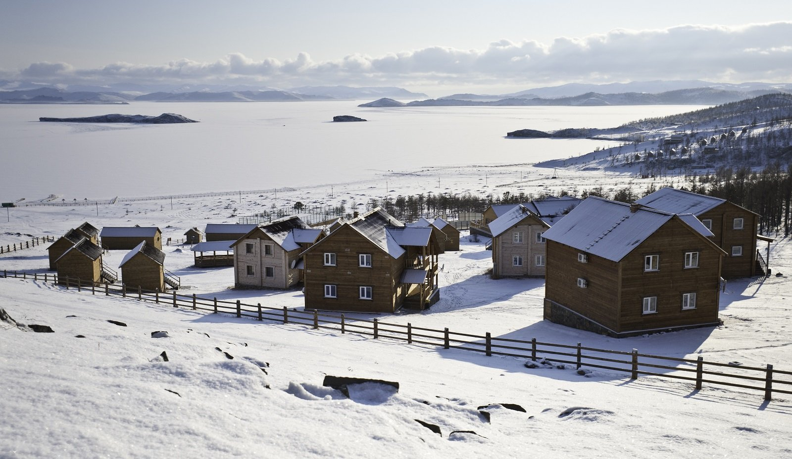
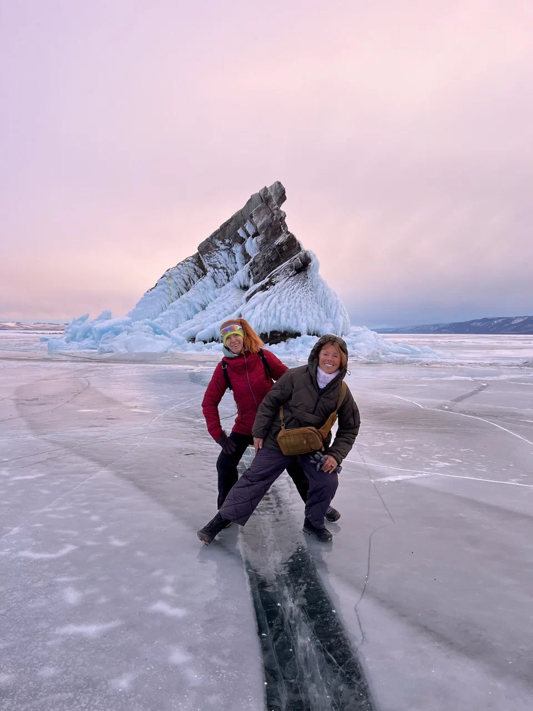
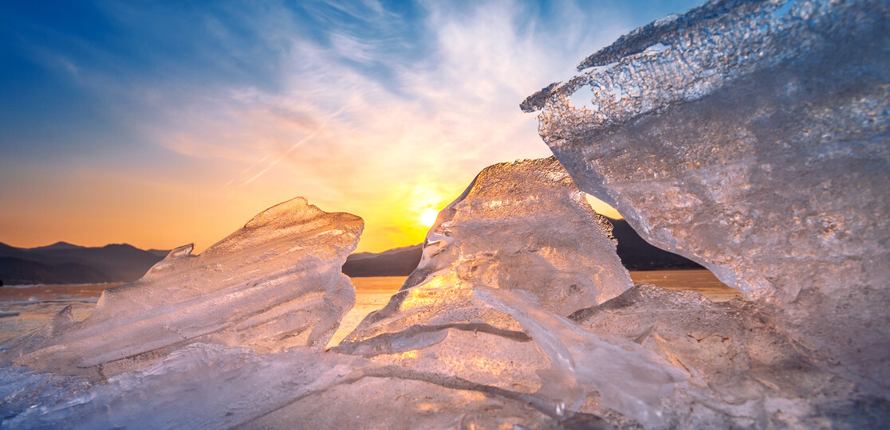

Мы прилетели в Иркутск рано утром. Чтобы максимально сэкономить время, взяли прямой трансфер до поселка Хужир на Ольхоне (около 5 часов). Зимой ледовая переправа не работает, но по официальной трассе безопасно: водители четко знают маршрут. Первая ночь была в гостевом доме с видом на замерзший Байкал. Температура ночью: -28°C, но это того стоит!



